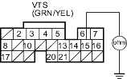
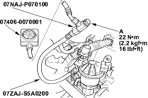

- Connect the VTEC solenoid valve 1P connector terminal No. 1 and body ground with a jumper wire.
Wire side of female terminal
- Check for continuity between ECM/PCM connector terminal B15 and body ground.

Is there continuity?
YES |
- Go to step 14. |
NO |
- Repair short in the wire between the VTEC solenoid valve and the ECM/PCM (B15). |

- Install the special tools as shown.

- Reconnect ECM/PCM connector B (24P) and the VTEC solenoid valve connector.
- Connect a tachometer.
- Start the engine. Hold the engine at 3.000 rpm (min-1) with no load (in Park or neutral) until the radiator fan comes on.
- Check oil pressure at engine speeds of 1,000 and 2,000 rpm (min-1). Keep measuring time as short as possible because the engine is running with no load (less than 1 minute).
Is pressure below 49 kPa (0.5 kgf/cm2, 7 psi)?
YES |
- Go to step 19. |
NO |
- Inspect the VTEC solenoid valve (see page 11-553). |